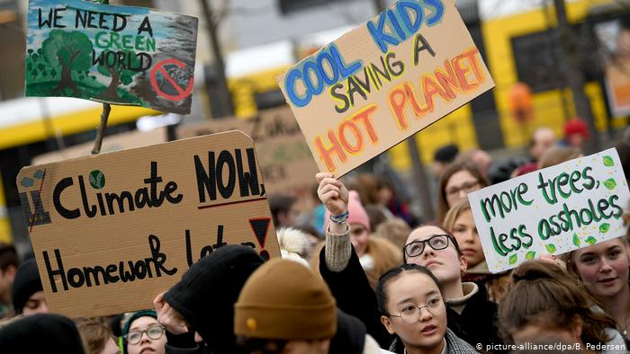

The school strike for climate (Swedish: Skolstrejk för klimatet), also known variously as Fridays for Future (FFF), Youth for Climate and Youth Strike 4 Climate, is an international movement of school students who take time off from class to participate in demonstrations to demand action to prevent further global warming and climate change. Publicity and widespread organising began after Swedish schoolgirl Greta Thunberg staged a protest in August 2018 outside the Swedish Riksdag (parliament), holding a sign that read "Skolstrejk för klimatet"
